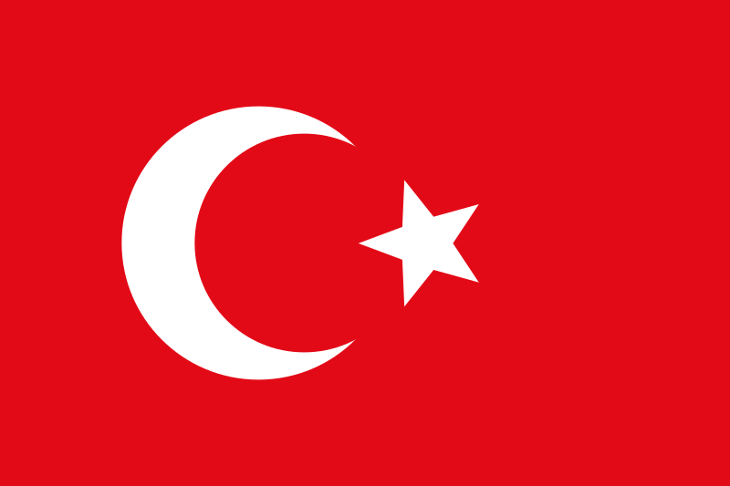

| Հիմնական տվյալներ | |
|---|---|
| Ի ծնե անուն | արմտ. հայ.՝ Սողոմոն Գեւորգի Սողոմոնեան |
| Ծնվել է | սեպտեմբերի 26 (հոկտեմբերի 8), 1869 Քյոթահիա |
| Երկիր |  Օսմանյան կայսրություն, Ռուսական կայսրություն և Ֆրանսիա |
| Մահացել է | հոկտեմբերի 22, 1935 [1][2][3] (66 տարեկան) կամ հոկտեմբերի 21, 1935 [4](66 տարեկան) Փարիզ, Ֆրանսիա [1] |
Կոմիտաս (Սողոմոն Գևորգի Սողոմոնյան, սեպտեմբերի 26 (հոկտեմբերի 8), 1869, Քյոթահիա - հոկտեմբերի 22, 1935 կամ հոկտեմբերի 21, 1935, Փարիզ, Ֆրանսիա), հայ երգահան, երգիչ, երաժշտական էթնոլոգ, երաժշտագետ, վարդապետ և ուսուցիչ, բանահավաք, խմբավար, մանկավարժ, հայկական ազգային կոմպոզիտորական դպրոցի հիմնադիր։ 1881-1893 թվականներին սովորել է Էջմիածնի Գևորգյան ճեմարանում։ 1894 թվականին ձեռնադրվել է աբեղա և ստացել Կոմիտաս անունը։ 1895 թվականին Կոմիտասին շնորհվել է վարդապետի հոգևոր աստիճան։ 1895-1896 թվականներին Թիֆլիսում կոմպոզիտոր Մակար Եկմալյանի ղեկավարությամբ ուսումնասիրել է երաժշտական տեսական առարկաներ, որից հետո՝ 1896-1899 թվականներին, ուսումը շարունակել է Բեռլինի Ֆրիդրիխ Վիլհելմ արքունի համալսարանում (ներկայումս Հումբոլդտի համալսարան) և Ռիչարդ Շմիդտի մասնավոր կոնսերվատորիայում։
Կոմիտասի գիտական և ստեղծագործական գործունեությունը նոր էջ բացեց հայ երաժշտական մշակույթի պատմության մեջ։ Հայ հոգևոր և ժողովրդական երաժշտությանը վերաբերող իր գիտական ուսումնասիրությունները Կոմիտասը ներկայացրել է Եվրոպայի մի շարք քաղաքներում (Բեռլին, Փարիզ, Ժնև, Լոզան և այլն), այդ թվում` Միջազգային երաժշտական ընկերության համաժողովներին, որի հիմնադիր անդամներից էր։ Կոմիտաս-գիտնականը նպատակ ուներ աշխարհին ներկայացնել հայկական երաժշտական հարուստ մշակույթի ավանդույթները և ապացուցել, որ «հայն ունի ինքնուրույն երաժշտություն»։
Կոմիտասի ստեղծագործական ոճը յուրահատուկ է իր տեսակի մեջ։ Հիմնվելով հայ ավանդական երաժշտական մշակույթի առանձնահատկությունների վրա՝ նա հայտնաբերեց հարմոնիայի և պոլիֆոնիայի կիրառման նոր և հարուստ հնարավորություններ, որոնք պատշաճ էին հայ երաժշտական մտածողությանը։ Նրա երաժշտական ժառանգությունն ընդգրկում է վոկալ («Անտունի», «Կռունկ», «Ծիրանի ծառ», «Ալ այլուղս», «Զինչ ու զինչ» և այլն), խմբերգային՝ ժողովրդական և հոգևոր («Անձրևն եկավ», «Լուսնակն անուշ», «Գութաներգ», «Հայր մեր», «Ով զարմանալի», «Այսօր ձայնն հայրական», «Էջ Միածինն ի Հօրէ», «Տէր, ողորմեա» և այն), և դաշնամուրային («Յոթ պար», «Մշո շորոր» և այլն) ժանրի ստեղծագործություններ։ Կոմիտասի ստեղծագործության մեջ առանձնակի կարևորություն է ներկայացնում իր միակ ավարտուն մեծակտավ գործը՝ «Պատարագ»-ը արական կազմի համար։ Կոմիտասն ունեցել է նաև օպերա ստեղծելու մի քանի մտահղացումներ, որոնք մնացել են անկատար։
Անգնահատելի է Կոմիտասի ավանդը բանահավաքչության գործում։ Շրջելով հայաբնակ բազմաթիվ բնակավայրերով՝ հմուտ երաժիշտը ձայնագրել է հայ ժողովրդական երգարվեստի տարբեր ժանրերի պատկանող մի քանի հազար երգ՝ այսպիսով մոռացումից փրկելով հայ ժողովրդի ստեղծած մի ամբողջ մշակույթ։ Այդ երգերն իր գիտական և ստեղծագործական երկերի ատաղձն են կազմում։
Որպես երգիչ և խմբավար՝ Կոմիտասը բազմաթիվ համերգներ է ունեցել Հայաստանում, Եվրոպայում, Եգիպտոսում, Կոստանդնուպոլսում, Թիֆլիսում և այլուր. նրա կատարումները մշտապես հիացական արձագանք են ունեցել ունկնդիրների շրջանում։ Կոմիտասը դասավանդել է Գևորգյան ճեմարանում, ապա նաև մասնավոր դասեր վարել Կոստանդնուպոլսում։ Նա կրթել է շնորհալի երիտասարդների մի սերունդ։ Իր աշակերտներից ոմանք հայ երաժշտության բնագավառում կարևոր դեր խաղացին. Բարսեղ Կանաչյանը դարձավ կոմպոզիտոր, Վարդան Սարգսյանը եղավ նրա ստեղծագործությունների տարածողը, Միհրան Թումաճանը շարունակեց զբաղվել բանահավաքչությամբ։